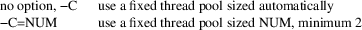
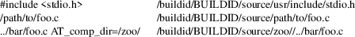

debuginfod − debuginfo-related http file-server daemon
debuginfod [OPTION]... [PATH]...
debuginfod serves debuginfo-related artifacts over HTTP. It periodically scans a set of directories for ELF/DWARF files and their associated source code, as well as archive files containing the above, to build an index by their buildid. This index is used when remote clients use the HTTP webapi, to fetch these files by the same buildid.
If a debuginfod cannot service a given buildid artifact request itself, and it is configured with information about upstream debuginfod servers, it queries them for the same information, just as debuginfod-find would. If successful, it locally caches then relays the file content to the original requester.
Indexing the given PATHs proceeds using multiple threads. One thread periodically traverses all the given PATHs logically or physically (see the −L option). Duplicate PATHs are ignored. You may use a file name for a PATH, but source code indexing may be incomplete; prefer using a directory that contains the binaries. The traversal thread enumerates all matching files (see the −I and −X options) into a work queue. A collection of scanner threads (see the −c option) wait at the work queue to analyze files in parallel.
If the −F option is given, each file is scanned as an ELF/DWARF file. Source files are matched with DWARF files based on the AT_comp_dir (compilation directory) attributes inside it. Caution: source files listed in the DWARF may be a path anywhere in the file system, and debuginfod will readily serve their content on demand. (Imagine a doctored DWARF file that lists /etc/passwd as a source file.) If this is a concern, audit your binaries with tools such as:
% eu-readelf
-wline BINARY | sed -n
’/^Directory.table/,/^File.name.table/p’
or
% eu-readelf -wline BINARY | sed -n
’/^Directory.table/,/^Line.number/p’
or even use debuginfod itself:
% debuginfod -vvv -d :memory: -F BINARY 2>&1 | grep
’recorded.*source’
^C
If any of the −R, -U, or -Z options is given, each file is scanned as an archive file that may contain ELF/DWARF/source files. Archive files are recognized by extension. If −R is given, ".rpm" files are scanned; if −U is given, ".deb" and ".ddeb" files are scanned; if −Z is given, the listed extensions are scanned. Because of complications such as DWZ-compressed debuginfo, may require two traversal passes to identify all source code. Source files for RPMs are only served from other RPMs, so the caution for −F does not apply. Note that due to Debian/Ubuntu packaging policies & mechanisms, debuginfod cannot resolve source files for DEB/DDEB at all.
If no PATH is listed, or none of the scanning options is given, then debuginfod will simply serve content that it accumulated into its index in all previous runs, periodically groom the database, and federate to any upstream debuginfod servers. In passive mode, debuginfod will only serve content from a read-only index and federated upstream servers, but will not scan or groom.
|
−F |
Activate ELF/DWARF file scanning. The default is off. |
−Z EXT −Z EXT=CMD
Activate an additional pattern in archive scanning. Files with name extension EXT (include the dot) will be processed. If CMD is given, it is invoked with the file name added to its argument list, and should produce a common archive on its standard output. Otherwise, the file is read as if CMD were "cat". Since debuginfod internally uses libarchive to read archive files, it can accept a wide range of archive formats and compression modes. The default is no additional patterns. This option may be repeated.
|
−R |
Activate RPM patterns in archive scanning. The default is off. Equivalent to −Z .rpm=cat, since libarchive can natively process RPM archives. If your version of libarchive is much older than 2020, be aware that some distributions have switched to an incompatible zstd compression for their payload. You may experiment with −Z .rpm=’(rpm2cpio|zstdcat)<’ instead of −R. | ||
|
−U |
Activate DEB/DDEB patterns in archive scanning. The default is off. Equivalent to −Z .deb=’dpkg-deb −−fsys−tarfile’ −Z .ddeb=’dpkg-deb −−fsys−tarfile’. |
−d FILE −−database=FILE
Set the path of the sqlite database used to store the index. This file is disposable in the sense that a later rescan will repopulate data. It will contain absolute file path names, so it may not be portable across machines. It may be frequently read/written, so it should be on a fast filesystem. It should not be shared across machines or users, to maximize sqlite locking performance. For quick testing the magic string ":memory:" can be used to use an one-time memory-only database. The default database file is $HOME/.debuginfod.sqlite.
−−passive
Set the server to passive mode, where it only services webapi requests, including participating in federation. It performs no scanning, no grooming, and so only opens the sqlite database read-only. This way a database can be safely shared between a active scanner/groomer server and multiple passive ones, thereby sharing service load. Archive pattern options must still be given, so debuginfod can recognize file name extensions for unpacking.
−D SQL −−ddl=SQL
Execute given sqlite statement after the database is opened and initialized as extra DDL (SQL data definition language). This may be useful to tune performance-related pragmas or indexes. May be repeated. The default is nothing extra.
−p NUM −−port=NUM
Set the TCP port number (0 < NUM < 65536) on which debuginfod should listen, to service HTTP requests. Both IPv4 and IPV6 sockets are opened, if possible. The webapi is documented below. The default port number is 8002.
−I REGEX −−include=REGEX −X REGEX −−exclude=REGEX
Govern the inclusion and exclusion of file names under the search paths. The regular expressions are interpreted as unanchored POSIX extended REs, thus may include alternation. They are evaluated against the full path of each file, based on its realpath(3) canonicalization. By default, all files are included and none are excluded. A file that matches both include and exclude REGEX is excluded. (The contents of archive files are not subject to inclusion or exclusion filtering: they are all processed.) Only the last of each type of regular expression given is used.
−t SECONDS −−rescan−time=SECONDS
Set the rescan time for the file and archive directories. This is the amount of time the traversal thread will wait after finishing a scan, before doing it again. A rescan for unchanged files is fast (because the index also stores the file mtimes). A time of zero is acceptable, and means that only one initial scan should performed. The default rescan time is 300 seconds. Receiving a SIGUSR1 signal triggers a new scan, independent of the rescan time (including if it was zero), interrupting a groom pass (if any).
|
−r |
Apply the -I and -X during groom cycles, so that files excluded by the regexes are removed from the index. These parameters are in addition to what normally qualifies a file for grooming, not a replacement. |
−g SECONDS −−groom−time=SECONDS
Set the groom time for the index database. This is the amount of time the grooming thread will wait after finishing a grooming pass before doing it again. A groom operation quickly rescans all previously scanned files, only to see if they are still present and current, so it can deindex obsolete files. See also the DATA MANAGEMENT section. The default groom time is 86400 seconds (1 day). A time of zero is acceptable, and means that only one initial groom should be performed. Receiving a SIGUSR2 signal triggers a new grooming pass, independent of the groom time (including if it was zero), interrupting a rescan pass (if any)..
|
−G |
Run an extraordinary maximal-grooming pass at debuginfod startup. This pass can take considerable time, because it tries to remove any debuginfo-unrelated content from the archive-related parts of the index. It should not be run if any recent archive-related indexing operations were aborted early. It can take considerable space, because it finishes up with an sqlite "vacuum" operation, which repacks the database file by triplicating it temporarily. The default is not to do maximal-grooming. See also the DATA MANAGEMENT section. |
−c NUM −−concurrency=NUM
Set the concurrency limit for the scanning queue threads, which work together to process archives & files located by the traversal thread. This important for controlling CPU-intensive operations like parsing an ELF file and especially decompressing archives. The default is related to the number of processors on the system and other constraints; the minimum is 1.
−C −C=NUM −−connection−pool −−connection−pool=NUM
Set the size of the pool of threads serving webapi queries. The following table summarizes the interpretaton of this option and its optional NUM parameter.

The first mode is a simple and safe configuration related to the number of processors and other constraints. The second mode is suitable for tuned load-limiting configurations facing unruly traffic.
|
−L |
Traverse symbolic links encountered during traversal of the PATHs, including across devices - as in find -L. The default is to traverse the physical directory structure only, stay on the same device, and ignore symlinks - as in find -P -xdev. Caution: a loops in the symbolic directory tree might lead to infinite traversal. |
−−fdcache−fds=NUM −−fdcache−mbs=MB
Configure limits on a cache that keeps recently extracted files from archives. Up to NUM requested files and up to a total of MB megabytes will be kept extracted, in order to avoid having to decompress their archives over and over again. The default NUM and MB values depend on the concurrency of the system, and on the available disk space on the $TMPDIR or /tmp filesystem. This is because that is where the most recently used extracted files are kept. Grooming cleans out this cache.
−−fdcache−prefetch−fds=NUM −−fdcache−prefetch−mbs=MB
−−fdcache−prefetch=NUM2
In addition to the main fdcache, up to NUM2 other files from an archive may be prefetched into another cache before they are even requested. Configure how many file descriptors (fds) and megabytes (mbs) are allocated to the prefetch fdcache. If unspecified, these values depend on concurrency of the system and on the available disk space on the $TMPDIR. Allocating more to the prefetch cache will improve performance in environments where different parts of several large archives are being accessed. This cache is also cleaned out during grooming.
−−fdcache−mintmp=NUM
Configure a disk space threshold for emergency flushing of the caches. The filesystem holding the caches is checked periodically. If the available space falls below the given percentage, the caches are flushed, and the fdcaches will stay disabled until the next groom cycle. This mechanism, along a few associated /metrics on the webapi, are intended to give an operator notice about storage scarcity - which can translate to RAM scarcity if the disk happens to be on a RAM virtual disk. The default threshold is 25%.
−−forwarded−ttl−limit=NUM
Configure limits of X-Forwarded-For hops. if X-Forwarded-For exceeds N hops, it will not delegate a local lookup miss to upstream debuginfods. The default limit is 8.
−−disable−source−scan
Disable scan of the dwarf source info of debuginfo sections. If a setup has no access to source code, the source info is not required.
|
−v |
Increase verbosity of logging to the standard error file descriptor. May be repeated to increase details. The default verbosity is 0. |
debuginfod’s webapi resembles ordinary file service, where a GET request with a path containing a known buildid results in a file. Unknown buildid / request combinations result in HTTP error codes. This file service resemblance is intentional, so that an installation can take advantage of standard HTTP management infrastructure.
Upon finding a file in an archive or simply in the database, some custom http headers are added to the response. For files in the database X-DEBUGINFOD-FILE and X-DEBUGINFOD-SIZE are added. X-DEBUGINFOD-FILE is simply the unescaped filename and X-DEBUGINFOD-SIZE is the size of the file. For files found in archives, in addition to X-DEBUGINFOD-FILE and X-DEBUGINFOD-SIZE, X-DEBUGINFOD-ARCHIVE is added. X-DEBUGINFOD-ARCHIVE is the name of the archive the file was found in.
There are three requests. In each case, the buildid is encoded as a lowercase hexadecimal string. For example, for a program /bin/ls, look at the ELF note GNU_BUILD_ID:
% readelf -n
/bin/ls | grep -A4 build.id
Note section [ 4] ’.note.gnu.buildid’ of 36
bytes at offset 0x340:
Owner Data size Type
GNU 20 GNU_BUILD_ID
Build ID: 8713b9c3fb8a720137a4a08b325905c7aaf8429d
Then the hexadecimal BUILDID is simply:
8713b9c3fb8a720137a4a08b325905c7aaf8429d
/buildid/BUILDID/debuginfo
If the given buildid is known to the server, this request
will result in a binary object that contains the customary
.*debug_* sections. This may be a split debuginfo
file as created by strip, or it may be an original
unstripped executable.
/buildid/BUILDID/executable
If the given buildid is known to the server, this request
will result in a binary object that contains the normal
executable segments. This may be a executable stripped by
strip, or it may be an original unstripped
executable. ET_DYN shared libraries are considered to
be a type of executable.
/buildid/BUILDID/source/SOURCE/FILE
If the given buildid is known to the server, this request
will result in a binary object that contains the source file
mentioned. The path should be absolute. Relative path names
commonly appear in the DWARF file’s source directory,
but these paths are relative to individual compilation unit
AT_comp_dir paths, and yet an executable is made up of
multiple CUs. Therefore, to disambiguate, debuginfod expects
source queries to prefix relative path names with the CU
compilation-directory, followed by a mandatory
"/".
Note: the caller may or may not elide ../ or /./ or extraneous /// sorts of path components in the directory names. debuginfod accepts both forms. Specifically, debuginfod canonicalizes path names according to RFC3986 section 5.2.4 (Remove Dot Segments), plus reducing any // to / in the path.
For example:

Note: the client should %-escape characters in /SOURCE/FILE that are not shown as "unreserved" in section 2.3 of RFC3986. Some characters that will be escaped include "+", "\", "$", "!", the ’space’ character, and ";". RFC3986 includes a more comprehensive list of these characters.
/buildid/BUILDID/section/SECTION
If the given buildid is known to the server, the server will
attempt to extract the contents of an ELF/DWARF section
named SECTION from the debuginfo file matching BUILDID. If
the debuginfo file can’t be found or the section has
type SHT_NOBITS, then the server will attempt to extract the
section from the executable matching BUILDID. If the section
is successfully extracted then this request results in a
binary object of the section’s contents. Note that
this result is the raw binary contents of the section, not
an ELF file.
/metrics
This endpoint returns a Prometheus formatted text/plain dump
of a variety of statistics about the operation of the
debuginfod server. The exact set of metrics and their
meanings may change in future versions. Caution:
configuration information (path names, versions) may be
disclosed.
debuginfod stores its index in an sqlite database in a densely packed set of interlinked tables. While the representation is as efficient as we have been able to make it, it still takes a considerable amount of data to record all debuginfo-related data of potentially a great many files. This section offers some advice about the implications.
As a general explanation for size, consider that debuginfod indexes ELF/DWARF files, it stores their names and referenced source file names, and buildids will be stored. When indexing archives, it stores every file name of or in an archive, every buildid, plus every source file name referenced from a DWARF file. (Indexing archives takes more space because the source files often reside in separate subpackages that may not be indexed at the same pass, so extra metadata has to be kept.)
Getting down to numbers, in the case of Fedora RPMs (essentially, gzip-compressed cpio files), the sqlite index database tends to be from 0.5% to 3% of their size. It’s larger for binaries that are assembled out of a great many source files, or packages that carry much debuginfo-unrelated content. It may be even larger during the indexing phase due to temporary sqlite write-ahead-logging files; these are checkpointed (cleaned out and removed) at shutdown. It may be helpful to apply tight −I or −X regular-expression constraints to exclude files from scanning that you know have no debuginfo-relevant content.
As debuginfod runs in normal active mode, it periodically rescans its target directories, and any new content found is added to the database. Old content, such as data for files that have disappeared or that have been replaced with newer versions is removed at a periodic grooming pass. This means that the sqlite files grow fast during initial indexing, slowly during index rescans, and periodically shrink during grooming. There is also an optional one-shot maximal grooming pass is available. It removes information debuginfo-unrelated data from the archive content index such as file names found in archives ("archive sdef" records) that are not referred to as source files from any binaries find in archives ("archive sref" records). This can save considerable disk space. However, it is slow and temporarily requires up to twice the database size as free space. Worse: it may result in missing source-code info if the archive traversals were interrupted, so that not all source file references were known. Use it rarely to polish a complete index.
You should ensure that ample disk space remains available. (The flood of error messages on -ENOSPC is ugly and nagging. But, like for most other errors, debuginfod will resume when resources permit.) If necessary, debuginfod can be stopped, the database file moved or removed, and debuginfod restarted.
sqlite offers several performance-related options in the form of pragmas. Some may be useful to fine-tune the defaults plus the debuginfod extras. The −D option may be useful to tell debuginfod to execute the given bits of SQL after the basic schema creation commands. For example, the "synchronous", "cache_size", "auto_vacuum", "threads", "journal_mode" pragmas may be fun to tweak via −D, if you’re searching for peak performance. The "optimize", "wal_checkpoint" pragmas may be useful to run periodically, outside debuginfod. The default settings are performance- rather than reliability-oriented, so a hardware crash might corrupt the database. In these cases, it may be necessary to manually delete the sqlite database and start over.
As debuginfod changes in the future, we may have no choice but to change the database schema in an incompatible manner. If this happens, new versions of debuginfod will issue SQL statements to drop all prior schema & data, and start over. So, disk space will not be wasted for retaining a no-longer-useable dataset.
In summary, if your system can bear a 0.5%-3% index-to-archive-dataset size ratio, and slow growth afterwards, you should not need to worry about disk space. If a system crash corrupts the database, or you want to force debuginfod to reset and start over, simply erase the sqlite file before restarting debuginfod.
In contrast, in passive mode, all scanning and grooming is disabled, and the index database remains read-only. This makes the database more suitable for sharing between servers or sites with simple one-way replication, and data management considerations are generally moot.
debuginfod does not include any particular security features. While it is robust with respect to inputs, some abuse is possible. It forks a new thread for each incoming HTTP request, which could lead to a denial-of-service in terms of RAM, CPU, disk I/O, or network I/O. If this is a problem, users are advised to install debuginfod with a HTTPS reverse-proxy front-end that enforces site policies for firewalling, authentication, integrity, authorization, and load control. The /metrics webapi endpoint is probably not appropriate for disclosure to the public.
When relaying queries to upstream debuginfods, debuginfod does not include any particular security features. It trusts that the binaries returned by the debuginfods are accurate. Therefore, the list of servers should include only trustworthy ones. If accessed across HTTP rather than HTTPS, the network should be trustworthy. Authentication information through the internal libcurl library is not currently enabled.
$HOME/.debuginfod.sqlite
Default database file.
debuginfod-find(1) sqlite3(1) https://prometheus.io/docs/instrumenting/exporters/